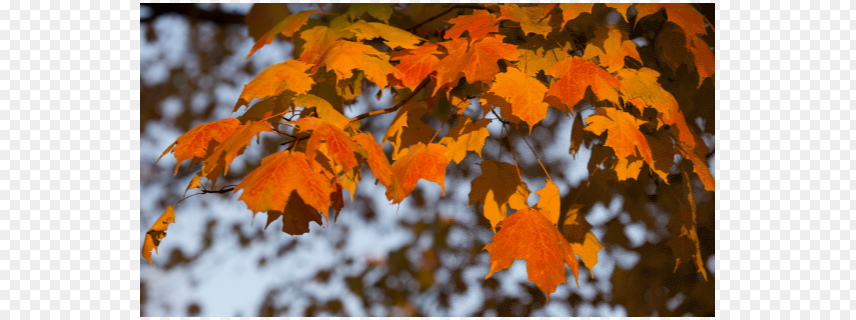
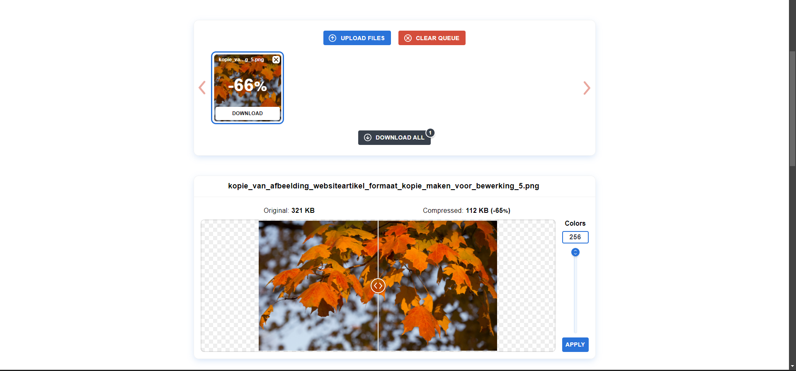
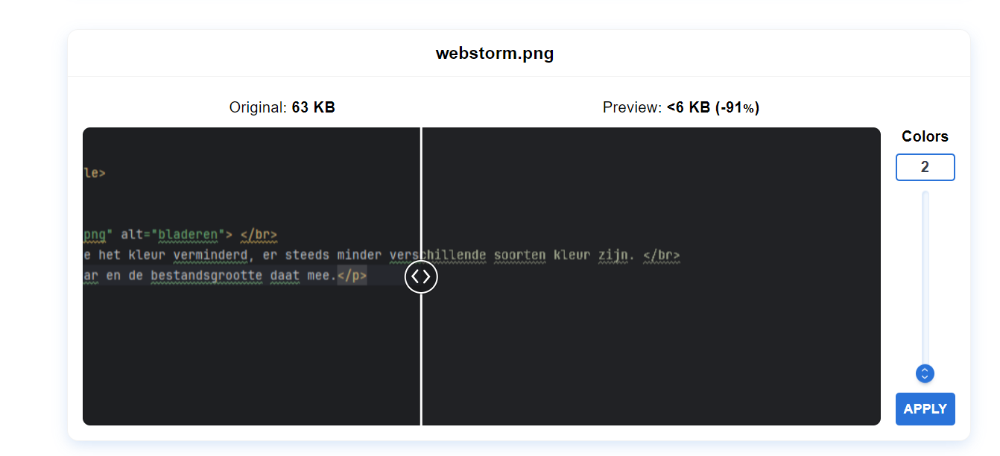

ik merk dat hoe lager het kleur, hoe minder verschillende soorten kleur er zijn. De bestandsgrootte verminderd ook als je het kleur verminderd
Je ziet duidelijk op de foto dat er weinig verschillende kleuren zijn, maar de originele kleuren een soort van "samengevoegd" worden.
 De letters beginnen geel te kleuren en je merkt ook dat de letters "dunner" worden.